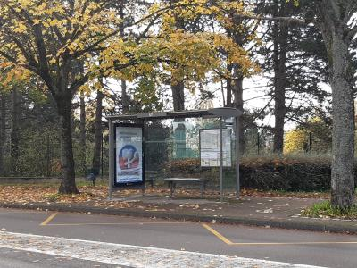

Les étudiants de l'IUT peuvent aller travailler dans le calme à la BU (bibliothèque Universitaire) située ici :
Toutefois, il y a une bibliothèque plus petite au sein de l'IUT.
Les étudiants peuvent aussi demander à emprunter des salles de cours pour pouvoir travailler sur les ordinateurs de l'IUT selon leurs disponibilités.
Le département Informatique possède un arrêt de Bus. De plus, l'arrêt de tram 'Université' permet d'accéder à l'IUT très rapidement.

Dans le batiment Informatique, il y a une cafétéria qui fait des petits déjeuners et des déjeuners. Mais le RU (Restaurant Universitaire) est facilement accessible depuis l'IUT.